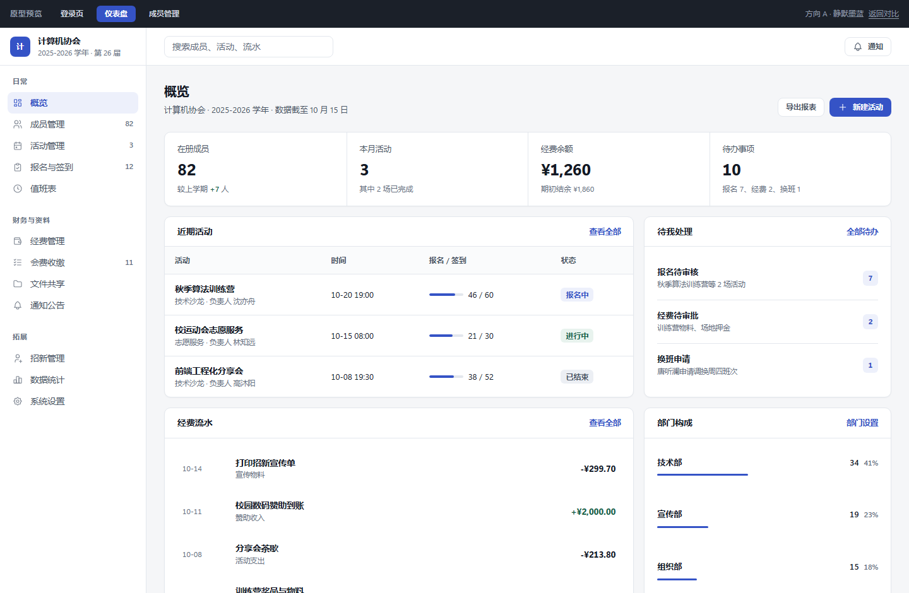
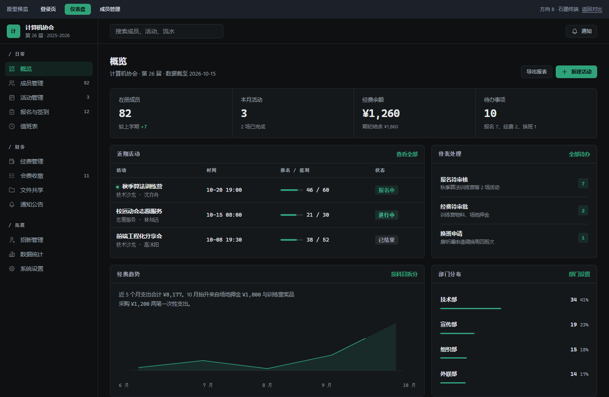
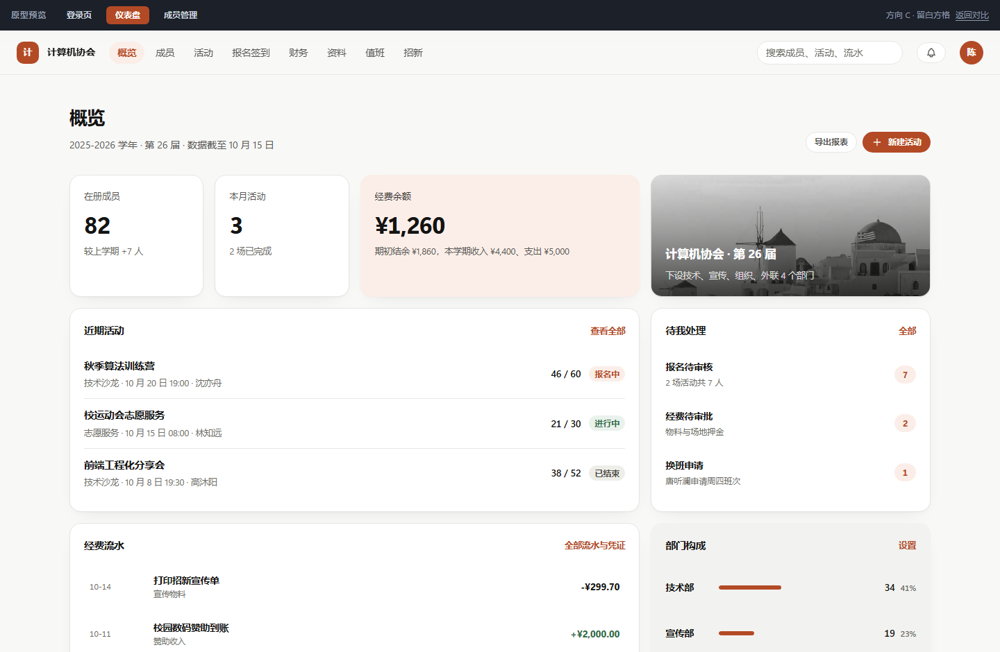

技术决策对比
三个方向建在同一套技术栈上，选方向不会影响后面的开发工作量。
| 对比项 | A · 静默墨蓝 | B · 石墨终端 | C · 留白方格 |
|---|---|---|---|
| 主题 | 浅色锁定 | 深色锁定 | 浅色锁定 |
| 导航结构 | 左侧栏 232px，三组分组 | 左侧栏 232px，等宽标签 | 单行顶部导航，无侧栏 |
| 概览版式 | 指标行加双栏面板 | 指标行加双栏面板与趋势图 | 六列 bento 网格，格子不等大 |
| 表格行高 | 较宽，两行式成员单元格 | 最窄，等宽数字右对齐 | 最宽，行间留白最多 |
| 数字字体 | 系统字，等宽数字对齐 | 等宽字体，全站统一 | 系统字，等宽数字对齐 |
| 交互动效 | 首次进入时淡入与数字增长 | 同上，另加趋势线随滚动绘制 | 格子错峰浮现，悬停抬起 |
| 移动端表现 | 侧栏收成横向条 | 侧栏收成横向条 | 原生单列，体验最好 |
| 落地难度 | 最低 | 中，深色配色需要逐项校对比度 | 中，bento 网格要处理断点塌陷 |
三个方向都实现了这些
不是静态贴图。下面的状态在每个方向里都能真实触发，建议点一遍再决定。
登录校验
留空提交会显示行内错误，填上任意内容即可进入后台。
加载骨架屏
进入成员管理时会先出现与最终表格同形的占位块，不会发生布局跳动。
搜索与筛选
按姓名、学号、手机号搜索，叠加部门与状态筛选，结果条数实时更新。
空状态
筛不出结果时会出现空状态面板，并给一个清空条件按钮。
未完成模块占位
点侧栏里其他模块会看到明确的"尚未绘制"占位，不会假装有内容。
降低动态偏好
系统开启"减少动态效果"后，所有动画折叠为静态，页面照常可用。
需要你知道的三件事
照片是占位图，必须替换
登录页的照片来自公共图库，只用来验证版面。请换成社团自己的活动照或校园照，
替换 img/panel-calm.jpg、img/panel-graphite.jpg、
img/panel-quiet.jpg 即可，尺寸保持竖向比例效果最好。
另外活动列表目前刻意没有放封面图，因为图库里的照片题材对不上，接入真实照片后再补。
所有数据都是假的
成员姓名、学号、手机号、金额全部是构造的演示数据。其中 82 名成员、3 场活动、 ¥1,260 余额来自你给的示例，其余数字按内部逻辑配平，例如余额等于期初结余加收入减支出。
这是设计原型，不是最终代码
原型用纯 HTML 与 CSS 手写，没有引入 Vue 或 Element Plus，目的是把视觉语言先定下来。 选定方向后，界面会用 Vue 3 加 Element Plus 重写，把这里的颜色、圆角、间距、 字号固化成一套主题变量，业务代码不碰这些值。